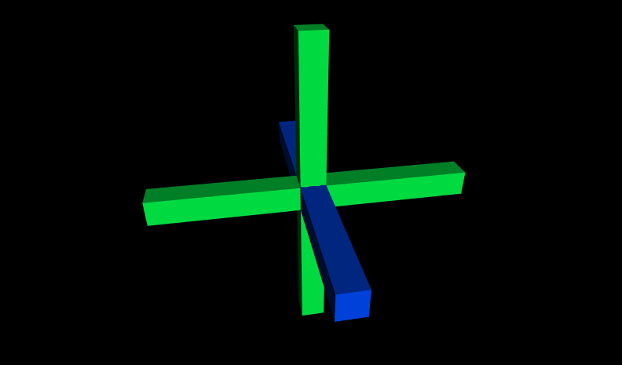

|
Prototypes are an extension mechanism that lets authors define their own customizable nodes,
improving reusability and sharing of cool content.
By declaring prototype designs and then creating one or more instances, you can create new node types that encapsulate
Shapes, Sensors, Interpolators, Scripts and anything else.
This technique creates new high-level nodes such as robots, menus, new shapes, etc.
A PROTO statement declares a new node type (a prototype) with
a name (the new node type name) along with fields and events (the interfaces to the prototype).
Once defined, a prototyped node can be used like any other node.
These X3D scenes are adapted directly from the
original VRML 2.0 Sourcebook chapter examples.
Also available:
Introduction to VRML97 SIGGRAPH98 course notes.
|

|